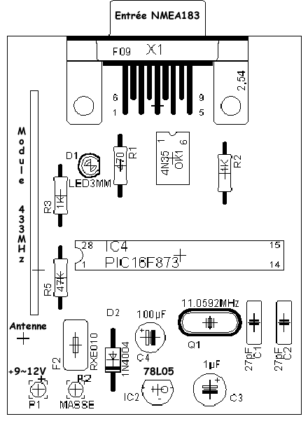
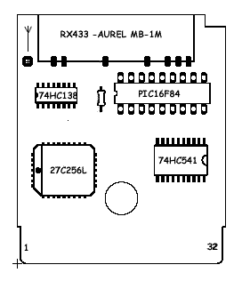

Projet — GBRGPS
Schémas et Montage
Réalisation de l'émetteur (PIC16F873) et du récepteur (PIC16F84 sur GameBoy).
Fichiers à télécharger
?? Télécharger les schémas complets (Schéma_GBRGPS.zip)1. L'Émetteur (PIC16F873)
Le cœur de l'émetteur (IC4) est un µC PIC16F873 cadencé à 11.0592 MHz. L'alimentation est comprise entre 9V et 12V. Le signal au format NMEA183 du GPS est connecté à travers un optocoupleur 4N35 qui assure l'isolation galvanique.

Implantation des composants de l'émetteur
2. Le Récepteur (PIC16F84 & GameBoy)
Le montage récepteur s'insère directement dans l'emplacement cartouche de la GameBoy. Le PIC16F84 (IC2) utilise l'horloge externe de la GameBoy (CLK) à 1.0486 MHz, évitant l'ajout d'un quartz.

Schéma du récepteur GPS 84